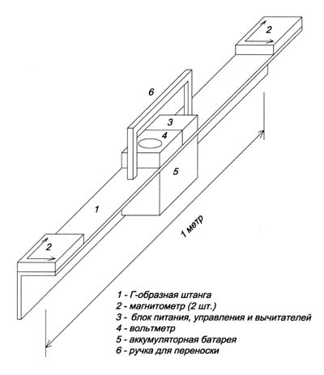
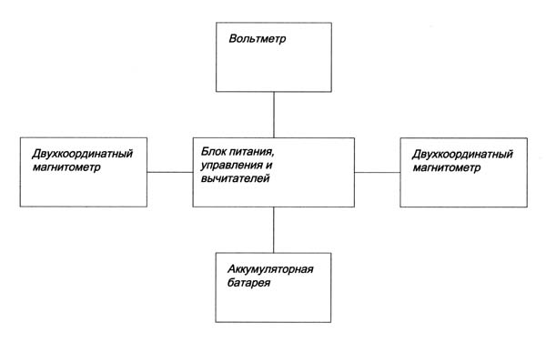
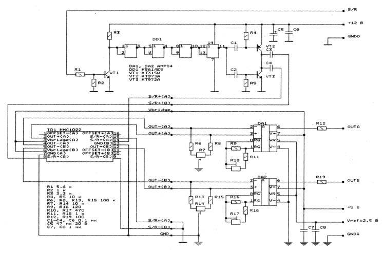
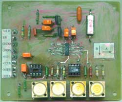
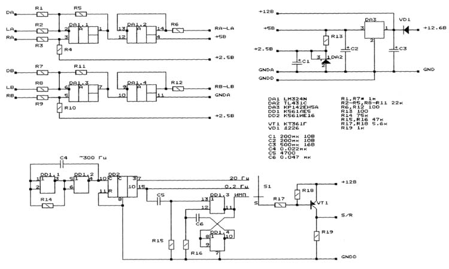
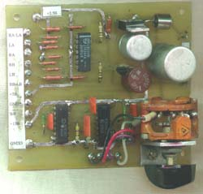
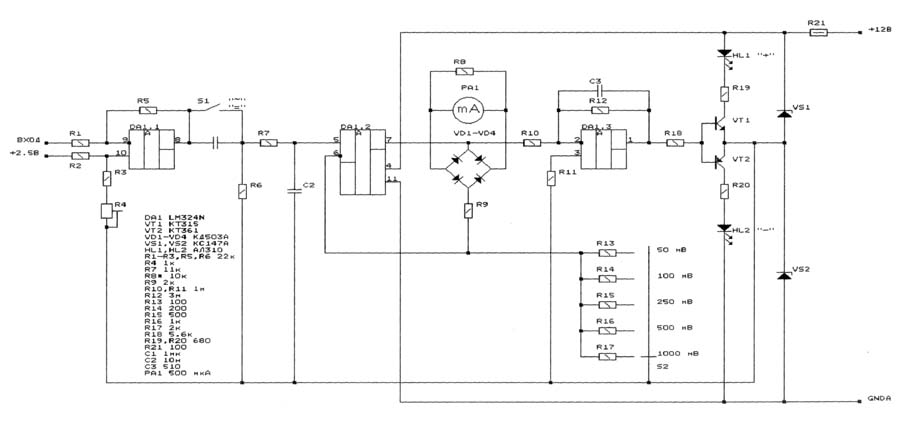
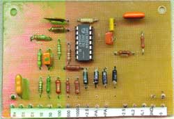

Пешеходный двухкоординатный магнитометр-градиентометр
Назначение
Пешеходный двухкоординатный магнитометр-градиентометр (ПДМГ) разрабатывался для решения задач подземного или подводного поиска трубопроводов (а также других достаточно крупных ферромагнитных объектов: техники, свалок и т. п.), построения маршрутов прокладки трасс подземных и подводных трубопроводных коммуникаций, а также оценки их состояния (дефектоскопии) и прогнозирования возможных аварий. Другими сферами применения могут быть:
Совместный проект с лабораторией магнитоэлектроники Тверского государственного университета (руководитель - Гречишкин Р. М.).
Технические данные пешеходного двухкоординатного магнитомера-градиентометра:
Режимы работы пешеходного двухкоординатного магнитометра-градиентометра:
Конструкция
Конструкция ПДМГ показана на рис. 1. Прибор состоит из двух идентичных двухкоординатных магнитометров (2), построенных на основе взаимноортогональных двухосных магниторезистивных преобразователей HMC1022 фирмы Honeywell [1]. Магнитометры расположены на некотором расстоянии друг от друга (измерительная база 1 метр) на концах немагнитной штанги (1) (алюминиевый профиль Г-образного сечения) таким образом, чтобы магниторезистивные преобразователи находились в одной плоскости, и их измерительные оси были параллельны и одинаково ориентированы. Поворотом штанги (вручную) можно задавать различную ориентацию плоскости преобразователей относительно поверхности Земли. Магнитометры соединены с блоком питания, управления и вычитателей (3). Для индикации показаний используется аналоговый вольтметр (4). Блок питания, управления и вычитателей (3) и вольтметр (4) расположены посередине штанги (1). Снизу к штанге (1) крепится аккумуляторная батарея (5). Сверху установлена ручка для переноски (6).

Рис. 1. Конструкция пешеходного двухкоординатного магнитометра-градиентометра (на магнитометрах (2) стрелками показаны направления максимальной чувствительности двухосных магниторезистивных преобразователей).
На рис. 2 представлена блок-схема ПДМГ. В состав прибора входят следующие узлы: двухкоординатные магнитометры (2 шт.), блок питания, управления и вычитателей, 5-диапазонный вольтметр. Питание ПДМГ осуществляется от аккумуляторной батареи.

Рис. 2. Блок-схема пешеходного двухкоординатного магнитометра-градиентометра.
На рис. 3 изображена схема двухкоординатного магнитометра. В качестве датчика магнитного поля использован двухкоординатный магниторезистивный преобразователь на микросхеме TD1 HMC1022 фирмы Honeywell [1]. Для работы этого датчика необходимы сигналы сброса/установки (импульсы тока амплитудой до 0.5 А длительностью около 1 мкс). На вход S/R магнитометра подаются прямоугольные импульсы с блока питания, управления и вычитателей. Микросхема DD1 (К561ЛЕ5) предназначена для формирования фронтов и спадов импульсов. С выхода микросхемы DD1 прямоугольные импульсы через дифференцирующие цепочки R4C1, R5C2 подаются на транзисторы VT2, VT3. Через конденсаторы C3, C4 импульсы сброса/установки подаются на соответствующие входы микросхемы TD1.
Выходные сигналы (пропорциональные составляющей индукции магнитного поля по соответствующей координате) с датчика TD1 подаются на дифференциальные входы усилителей DA1, DA2 (AMP04 фирмы Analog Devices). Для установки нулевого выходного сигнала в отсутствие магнитного поля используются цепочки R6R7R8, R13R14R15. Коэффициент усиления усилителей DA1, DA2 (соответствующий коэффициенту преобразования 1 В/Гс или 10 мВ/мкТл) задается с помощью резисторов R10 и R17. Через токоограничивающие резисторы R12, R19 сигналы поступают на выход преобразователя (OUTA, OUTB). Для питания магнитометра используются напряжения +12, +5 и +2.5 В (Vref), поступающие от блока питания, управления и вычитателей.
На рис. 4 показан внешний вид печатной платы двухкоординатного магнитометра.

Рис. 3. Схема принципиальная двухкоординатного магнитометра.

Рис. 4. Внешний вид печатной платы двухкоординатного магнитометра.
На рис. 5 приведена схема блока питания, управления и вычитателей, а печатная плата - на рис. 6. Напряжение +12.6 В с аккумуляторной батареи через защитный диод VD1 подается на контакт +12 В (для питания узлов ПДМГ) и на стабилизатор напряжения +5 В (DA3 - КР142ЕН5А). Для работы усилителей магнитометра от источника однополярного напряжения служит источник опорного напряжения Vref (+2.5 вольт) на элементах R13 и DA2 (TL431C).
Для формирования сигналов сброса-установки (S/R) служит генератор на микросхемах DD1 (К561ЛЕ5), DD2 (К561ИЕ16). На выходе генератора могут присутствовать четыре разновидности сигнала S/R (режим работы выбирается переключателем S1): прямоугольные импульсы частотой 20 Гц и скважностью, равной 0.5; прямоугольные импульсы частотой 0.2 Гц и скважностью, равной 0.5; прямоугольные импульсы частотой 0.2 Гц и скважностью, равной примерно 0.05; нулевой уровень.
На микросхеме DA1 (LM324N - четыре операционных усилителя) собраны вычитатели для измерения разности магнитной индукции (градиента) по соответствующей оси магнитометров.

Рис. 5. Схема принципиальная блока питания, управления и вычитателей пешеходного двухкоординатного магнитометра-градиентометра.

Рис. 6. Внешний вид печатной платы блока питания, управления и вычитателей пешеходного двухкоординатного магнитометра-градиентометра.
На рис. 7 и 8 показана схема и печатная плата вольтметра, имеющего пять измерительных поддиапазонов. Входной каскад на операционном усилителе DA1.1 (1/2 LM324N) собран по схеме дифференциального усилителя с коэффициентом усиления 1 и служит для согласования уровня сигналов. Вольтметр, построенный на операционном усилителе DA1.2 (1/2 LM324N) по схеме преобразователя напряжение-ток, может работать с открытым или закрытым входом, в зависимости от положения переключателя S1. Закрытый вход позволяет отделить переменную составляющую сигнала от постоянной, что в сочетании с разнообразием форм сигнала S/R существенно расширяет возможности ПДМГ. Для индикации полярности входного напряжения использован узел на микросхеме DA1.3 (1/2 LM324N), транзисторах VT1, VT2 и светодиодных индикаторах HL1, HL2.
Вход вольтметра может быть подключен к любому из выходов магнитометров, а также к выходу любого из вычитателей.

Рис. 7. Схема принципиальная вольтметра.

Рис. 8. Внешний вид печатной платы вольтметра.
Состояние разработки:
Изготовлен рабочий макет, проведены полевые испытания, создана оригинальная методика юстировки датчиков и калибровки магнитометров, производится работа по усовершенствованию прибора (повышение температурной и временной стабильности показаний), разрабатываются методики применения.
На основе данной разработки создан цифровой ПДМГ [4].
Соотношения между единицами измерения (Тл - Тесла, Гс - Гаусс):
Ссылки:
29.07.2004
24.01.2006
04.05.2007
Альтернативные источники
энергии
Компьютеры и
Интернет
Магнитные поля
Механотронные системы
Перспективные
разработки
Электроника и технология